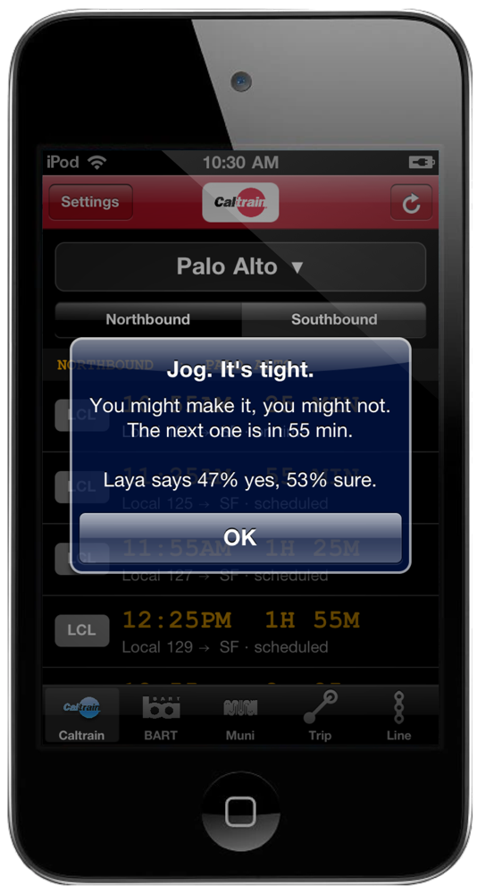
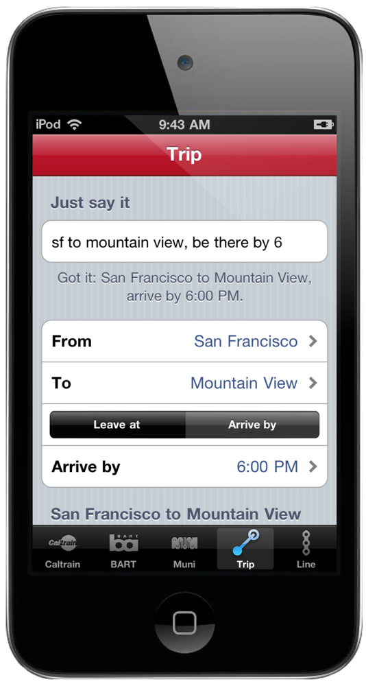
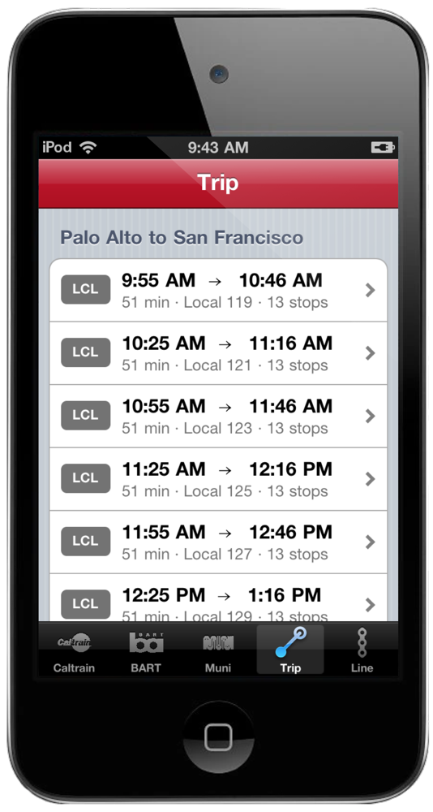
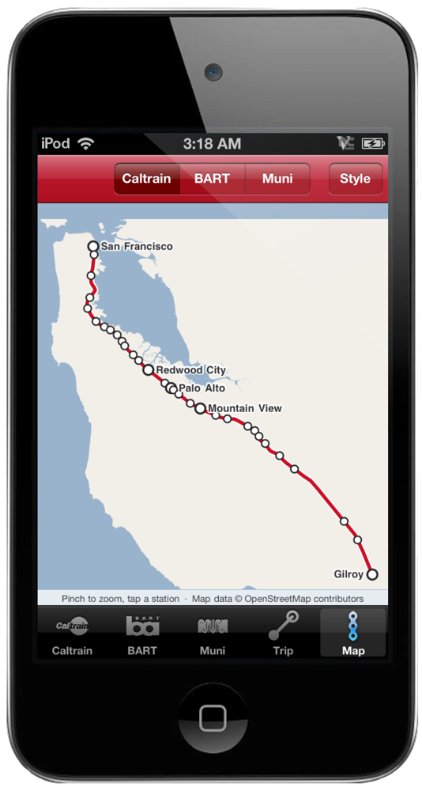
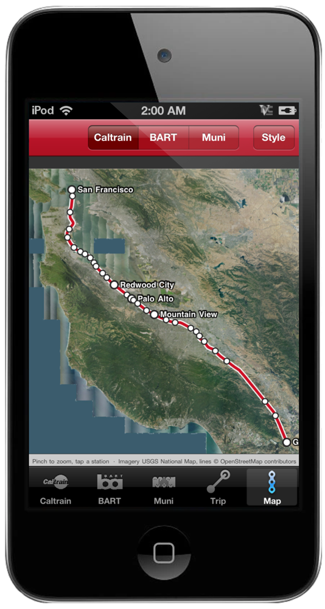
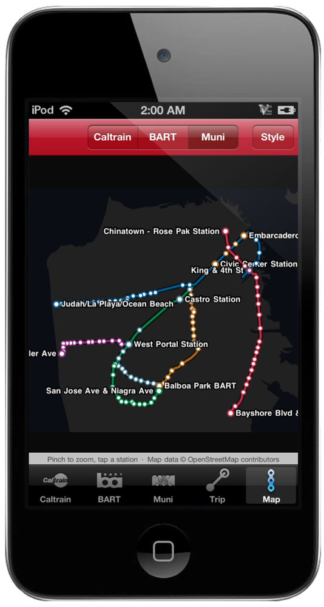
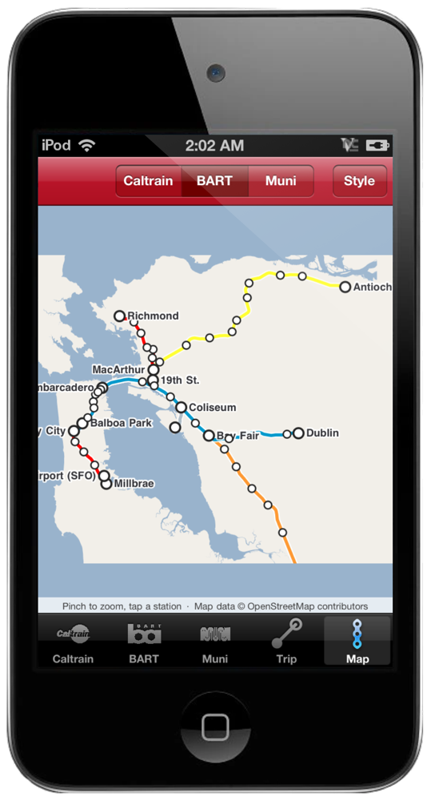
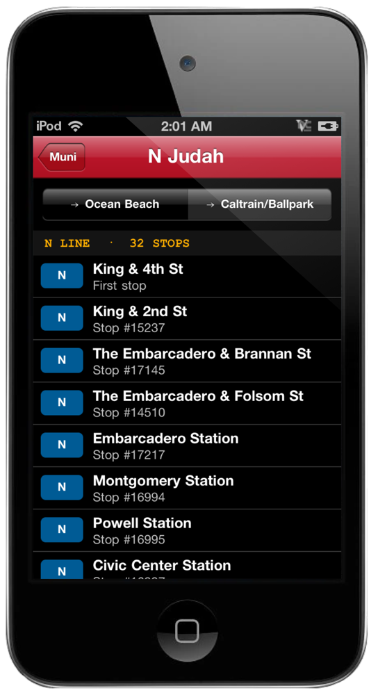

The platform sign, in amber.
Pick your station once. The next trains come up like the board on the platform: local, limited or express, the minutes until it leaves, and whether it's running late. Bright means live, dim means timetable.

Run for it?
Tap a train leaving in the next ten minutes and Laya weighs the minutes, your walk to the platform and when the next one comes. Run, jog, or let it go, with a percentage so you can argue with it. Service alerts sit at the top of the board and the trip planner.

Just say it.
"sf to mountain view, be there by 6." OpenRelay reads it, fills in the stations and the time, and the timetable does the rest. No typing station names into boxes.

Leave at. Arrive by.
Every train that gets you there, with the ride time, the number of stops and the Clipper fare. Tap one for the full stop list.

The whole Bay, on a map.
A real map of the Bay drawn from OpenStreetMap shoreline in the colors of the old Maps tiles, with the Caltrain track, every BART line in its color, and the six Muni Metro lines. Pinch to zoom, tap any station and its board slides in. No tiles to download, so it works in a tunnel.

Three looks.
Standard is the beige-and-blue of the Maps app of the day. Satellite is Sentinel-2 cloudless imagery of the whole Bay (EOX, CC BY 4.0), with USGS aerials for the city, baked into the app so it never needs a download. Night turns the lights down and the lines up. Pick one from the Style button and it sticks.

Lights out.
The six Muni Metro lines in their colors on the night map. Every stop is a tap away from its live arrivals.

Every BART train. Every minute.
Pick any of the 50 stations and the board fills with the next trains, the line color, platform, car count and how late it's running. It refreshes itself every minute while you look at it. Plan a trip and BART's own planner answers with transfers and the Clipper fare. Every line is on the map in its color, and tapping a station opens its board.

Muni Metro, and your stops.
J, K, L, M, N and T with every stop in order, tap one for the next trains and save it. Or type the stop number from the pole and it's on your board for good, with the next arrivals for every line that stops there. Buses, Metro, cable cars. All 3,240 stop names are built in so you know you typed the right one.